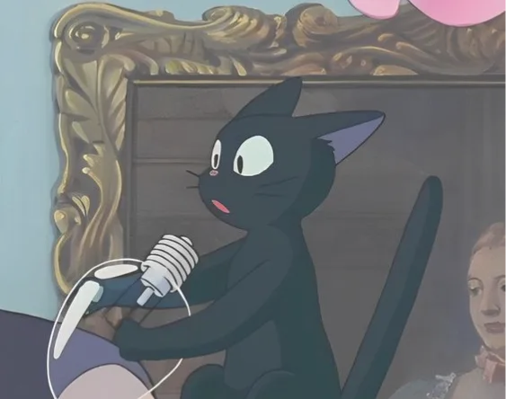
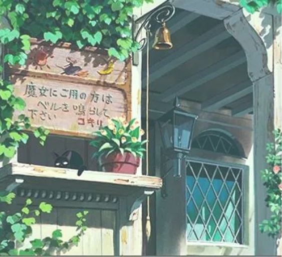

Kiki la Petite Sorcière : Le Charme Intemporel d'un Chef-d'Œuvre du Studio Ghibli
L'animation japonaise a le pouvoir de captiver les spectateurs de tout âge grâce à des histoires magiques, des personnages attachants et une animation à couper le souffle."Kiki la Petite Sorcière", un film du Studio Ghibli réalisé par Hayao Miyazaki, incarne parfaitement ces éléments tout en véhiculant des valeurs essentielles.
Sorti en 1989 au Japon et en 1991 dans le reste du monde,"Kiki la Petite Sorcière" raconte l'histoire de Kiki, une jeune sorcière de 13 ans qui, selon la tradition, doit quitter la maison familiale pour parfaire ses compétences de sorcière et trouver sa place dans le monde. Accompagnée de son fidèle chat noir Jiji, Kiki s'installe dans une charmante ville côtière où elle ouvre un service de livraison par le biais de son balai magique.
 Illustration, Kiki’s Delivery serviceL'indépendance est un thème central du film. Kiki quitte le cocon familial pour suivre son propre chemin, un voyage d'auto découverte et de croissance personnelle. Son audace et son désir de réussir par elle-même illustrent l'importance de l'indépendance et de la confiance en soi. Les spectateurs sont encouragés à poursuivre leurs rêves et à embrasser leur propre chemin, même s'il est semé d'embûches.
L'aventure est également un élément majeur de l'histoire. Kiki explore la ville, fait de nouvelles rencontres et se confronte à des défis inattendus. Cette aventure la pousse à sortir de sa zone de confort et à s'adapter à des situations variées, renforçant ainsi son caractère. L'envie d'explorer le monde et d'embrasser de nouvelles expériences est une valeur qui résonne fortement dans le film.
 Illustration, Kiki’s Delivery serviceLe travail acharné est un autre thème central. Kiki ouvre son service de livraison par le biais de son balai magique, et elle s'efforce de satisfaire ses clients en fournissant un service fiable. Le film souligne l'importance de la persévérance et de l'effort, même lorsqu'on est confronté à des difficultés. C'est un rappel que le succès nécessite du travail et de la détermination.
Enfin, la protection environnementale est un thème sous-jacent. La ville côtière représentée dans le film est un endroit pittoresque qui est menacé par la modernisation. Kiki et son amie Tombow s'efforcent de protéger un arbre millénaire, mettant ainsi en lumière l'importance de préserver la nature face au développement rapide. Le film encourage la réflexion sur notre relation avec l'environnement.
"Kiki la Petite Sorcière" est bien plus qu'un simple film d'animation. Il célèbre des valeurs essentielles telles que l'indépendance, l'aventure, le travail acharné etla protection environnementale. Grâce à son héroïne attachante, son animation magnifique, sa musique envoûtante et ses thèmes universels, ce film du Studio Ghibli reste un incontournable pour tous les amateurs d'animation. Il nous rappelle l'importance de suivre nos rêves, d'embrasser l'aventure, de travailler dur et nous sensibilise à la protection environnementale, tout en nous transportant dans un monde magique et enchanteur. Si vous ne l'avez pas encore vu, il est temps de vous envoler sur le balai de Kiki pour une aventure inoubliable.
Lire l’article auteur : Hayao MIYAZAKI

 Illustration, Kiki’s Delivery service
Illustration, Kiki’s Delivery service